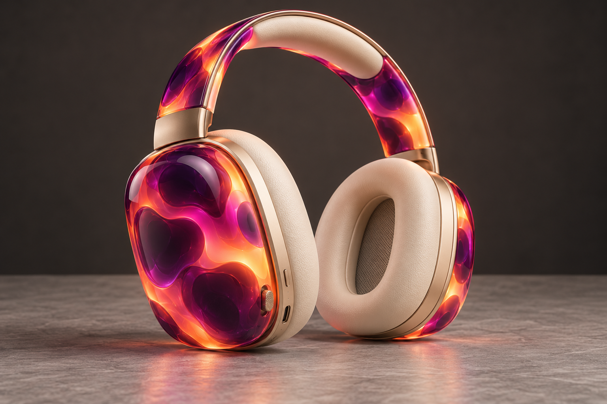

Aurora
A continuous 15-second product film. Ivory leather, champagne metal, and flowing violet–rose–amber light.
Download the MP4 · View the animated preview


Animated design visualization with camera motion and light flow. No physical unit is shown.